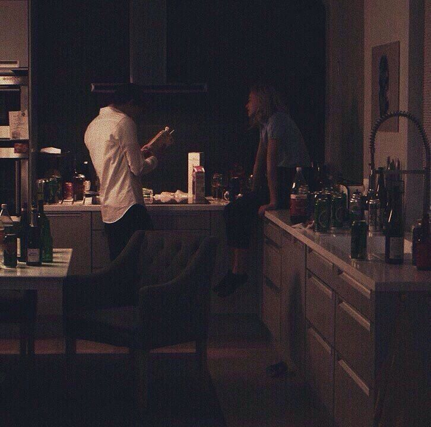

Comparitir un vino a solas se volvio una sensacion demasiada
especial y intima que solo quiero disfrutar
si estoy contigo.
Con cada trago de tí me da más sed
CHEF PROFESIONAL
Preparas los mejores platillos
dandole un sazon especial de amor, que te queda
delicioso...
Vivo en los recuerdos que creamos juntos
Recordando en los días que nos quedamlos en depas,
imaginando que es nuestro mientras me cocinas
mi plato favorito.

" Me enamoré de tí a pesar de todo."
Cuando te ví me enamore de tu sonrisa
tus ojos, tu voz y tu forma de hablar
la forma que tienes de reír sacando la lengua,
la paz que se siente abrazarte, Como cuidas de tí y tus chistes sin gracia
que solo me hacen reír a mi.
Lo reservado que eres con lo que sientes,
Como perder el control te hace sentir vulnerable.
Me intriga que guardas
Tengo la necesidad de esperar a
que
un día te abras conmigo, sin reservas, si no de una forma geniuna y honesta
No hay defecto que yo no acepte solo porque proviene de ti.
Ansio que me voltes a ver, me mires a mí, sin ver el pasado,
Que cierres esa puerta y podamos abrir la nuestra
Quiero crecer junto a ti y apoyarnos mutuamente en el camino.
Que sigas tus impulsos sin miedos, por que sabrás que estoy yo
Que no tengas que perderme para saber que me querías a tu lado
Poco conozco tu historia pero he sido victima de tus heridas
No llegaré a saber por qué ni cómo, nunca,
Pero abandonar lo que tenemos no esta en mis opciones
Veo tu potencial y confío absolutamente en tí.
Pero necesito que nazca de tí, quedarte
Eres todo para mí,
Mi alegría
Mi deseo
Mi felicidad
Mi dolor.
imaginando que es nuestro mientras me cocinas
mi plato favorito.